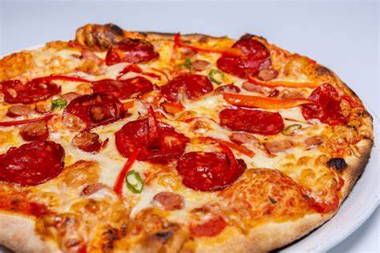

Pizzeria
Inicio
Pizzerias
Videos
Estilos
Historia
Comparacion
Recetas
Direcciones
Videos relacionados a Pizza
Pizza Napolitana
Pizza Margherita
Pizza Siciliana
Pizza Diavola

Pizza Frutti di Mare
Pizza Nueva York
Pizza Chicago
Pizza New Haven
Pizza Detroit
Esto lo hice al propio para mostrar como se ve cuando el usuario no puede ver la imagen por x razon